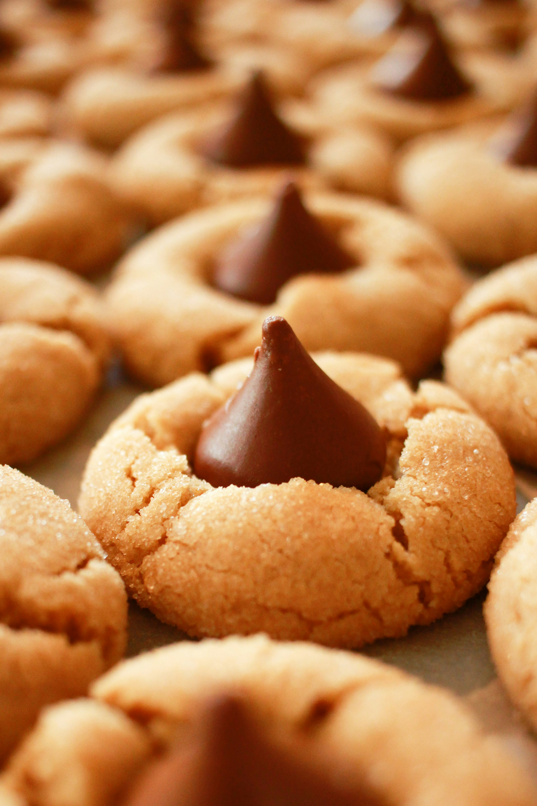

Peanut Butter Cookies
Home

These peanut butter cookies are a classic favorite, with a rich, nutty flavor and a soft, chewy texture.
Ingredients:
- 1 cup unsalted butter, softened
- 1 cup granulated sugar
- 1 cup packed brown sugar
- 2 large eggs
- 2 teaspoons vanilla extract
- 3 cups all-purpose flour
- 1 teaspoon baking soda
- 1/2 teaspoon salt
- 1 cup creamy peanut butter
Instructions:
- Preheat your oven to 350°F (175°C).
- In a large bowl, cream together the butter, granulated sugar, and brown sugar until smooth.
- Beat in the eggs one at a time, then stir in the vanilla extract.
- In a separate bowl, combine the flour, baking soda, and salt. Gradually blend this into the creamed mixture.
- Stir in the peanut butter.
- Drop by rounded spoonfuls onto ungreased cookie sheets.
- Bake for 10 to 12 minutes, or until edges are nicely browned.
- Allow cookies to cool on the baking sheet for a few minutes before transferring them to wire racks to cool completely.